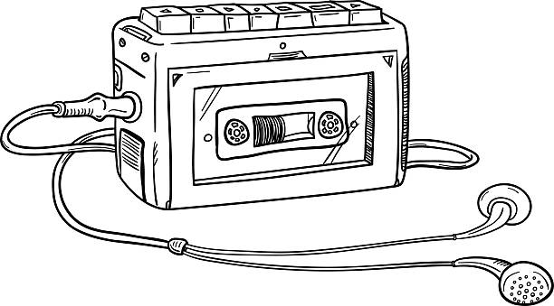

Una web analógica en un mundo digital ⚡
Si eres un nostálgico, este es tu lugar
Nove-antiguedades
El walkman esta de regreso
¿Necesitas escuchar tus cassettes y no tienes con qué? Revisa nuestra sección de reproductores
Los reproductores son reciclados y revisados por el equipo de La Cassetteca, asegurando un control de calidad y funcionamiento adecuado.
Los Prisioneros - La Voz de los 80s
10 Jun 2022
Pieza angular del rock chileno, Jorge González inició un nuevo capítulo dentro de la música popular de su país con La Voz de los ‘80, primer álbum de una formación que no le pedía nada a las bandas españolas o argentinas de mayor éxito en la primera mitad de aquella década. Abrazados inmediatamente por una juventud que se vio reflejada en las contestatarias letras de “No Necesitamos Banderas”, “Mentalidad Televisiva” o “Nunca Quedas Mal Con Nadie”, Los Prisioneros fusionaron los ritmos veloces del rock y el punk con aires de ska, reggae o incluso jazz, reflejando la realidad chilena del momento con una lucidez lírica y una calidad musical pocas veces igualada.
Aparato Raro - Homónimo
9 Jun 2022
Aparato Raro es una banda chilena de música synth pop y new wave formada en Santiago en 1982 por Juan Ricardo Weiler, Igor Rodríguez, Rodrigo "Coti" Aboitiz, y Boris Sazunic. La banda nació primero como un grupo de jazz-fusión; se llamaba Ojo de Horus, y era liderada por el baterista Juan Ricardo Weiler. Su relativa popularidad se debe a la canción "Calibraciones" la cual fue un gran éxito debido a su cercanía al underground, cultura que estaba volviéndose una moda en esa época.Viena - Homónimo
8 Jun 2022
Viena fue una de las bandas más interesantes dentro del contexto de pop chileno de mediados de los años ochenta, tanto por su estilo musical (influído por el pospunk y la new-wave inglesa) como por su preocupación estética. Sus integrantes no se dejaban fotografiar sin las vistosas tenidas y maquillajes que lucían en sus shows, los cuales constituían una completa novedad en el Santiago de esa época.
¿Viste un producto en otro sitio?
Cuéntanos sobre el producto que encontraste y La Cassetteca te ayudará con la busqueda y traspaso del mismo. Hacemos intermediación de productos (¿cuáles?), respetando ciertas condiciones y con un exhaustivo control de calidad de los productos. Tenemos alianzas con sitios web de amplio uso (MercadoLibre, Amazon, etc.)